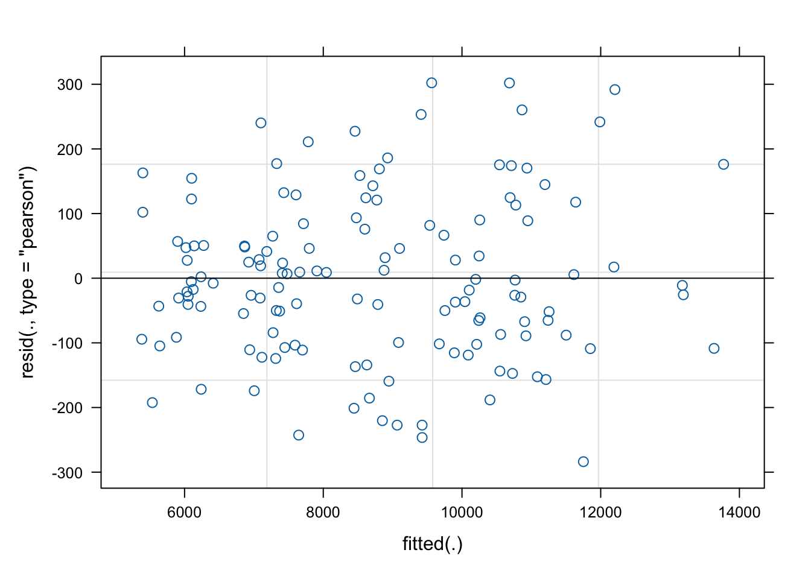
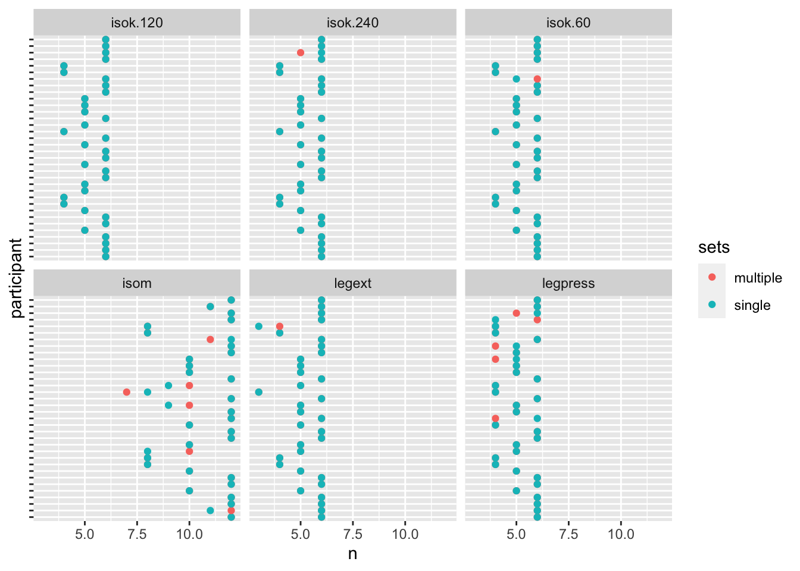

# Create a wide data set of change scores per volume condition# suitable for a t-testleanmass_change_wide <- leanmass %>%pivot_wider(names_from = time, values_from = lean.mass) %>%mutate(change = post - pre) %>%select(participant, sex, sets, change) %>%pivot_wider(names_from = sets, values_from = change) %>%mutate(diff = multiple - single) %>%print()
# A tibble: 34 × 5
participant sex multiple single diff
<chr> <chr> <dbl> <dbl> <dbl>
1 FP28 female 214 123 91
2 FP40 female -69 2 -71
3 FP21 male 619 189 430
4 FP34 female 396 312 84
5 FP23 male -205 445 -650
6 FP36 female 587 386 201
7 FP38 female -85 225 -310
8 FP25 male 373 -47 420
9 FP19 male 302 127 175
10 FP13 male 734 915 -181
# ℹ 24 more rows
# A tibble: 68 × 5
participant sex sets pre post
<chr> <chr> <fct> <dbl> <dbl>
1 FP28 female multiple 7059 7273
2 FP28 female single 7104 7227
3 FP40 female single 7190 7192
4 FP40 female multiple 7506 7437
5 FP21 male single 10281 10470
6 FP21 male multiple 10200 10819
7 FP34 female single 6014 6326
8 FP34 female multiple 6009 6405
9 FP23 male single 8242 8687
10 FP23 male multiple 8685 8480
# ℹ 58 more rows
## Do a t-test on change scores per condition. ## Alternatives (paired, equal variation)tt1 <-with(leanmass_change_wide, t.test(multiple, single, paired =TRUE))## The same model but with lmm1 <-lm(diff ~1, data = leanmass_change_wide)summary(m1)
Call:
lm(formula = diff ~ 1, data = leanmass_change_wide)
Residuals:
Min 1Q Median 3Q Max
-772.79 -200.79 10.21 279.46 508.21
Coefficients:
Estimate Std. Error t value Pr(>|t|)
(Intercept) 122.79 56.14 2.187 0.0359 *
---
Signif. codes: 0 '***' 0.001 '**' 0.01 '*' 0.05 '.' 0.1 ' ' 1
Residual standard error: 327.3 on 33 degrees of freedom
## Do a t-test on change scores per condition. ## Alternatives (paired, equal variation)tt1 <-with(leanmass_change_wide, t.test(multiple, single, paired =TRUE))## The same model but with lmm1 <-lm(diff ~1, data = leanmass_change_wide)summary(m1)
Call:
lm(formula = diff ~ 1, data = leanmass_change_wide)
Residuals:
Min 1Q Median 3Q Max
-772.79 -200.79 10.21 279.46 508.21
Coefficients:
Estimate Std. Error t value Pr(>|t|)
(Intercept) 122.79 56.14 2.187 0.0359 *
---
Signif. codes: 0 '***' 0.001 '**' 0.01 '*' 0.05 '.' 0.1 ' ' 1
Residual standard error: 327.3 on 33 degrees of freedom
### Mixed effects model# A mixed effects model allowing for a random slope for time is very similar # to the t-test used above. m2 <-lmer(lean.mass ~ time * sets +( 1+ time |participant), data = leanmass)# Check the summary summary(m2)
Linear mixed model fit by REML ['lmerMod']
Formula: lean.mass ~ time * sets + (1 + time | participant)
Data: leanmass
REML criterion at convergence: 1998.2
Scaled residuals:
Min 1Q Median 3Q Max
-1.67695 -0.54463 -0.05569 0.48676 1.78603
Random effects:
Groups Name Variance Std.Dev. Corr
participant (Intercept) 4084131 2020.9
timepost 85701 292.7 0.14
Residual 28635 169.2
Number of obs: 136, groups: participant, 34
Fixed effects:
Estimate Std. Error t value
(Intercept) 8589.00 347.80 24.695
timepost 166.26 64.85 2.564
setsmultiple 14.53 41.04 0.354
timepost:setsmultiple 122.79 58.04 2.116
Correlation of Fixed Effects:
(Intr) timpst stsmlt
timepost 0.070
setsmultipl -0.059 0.316
tmpst:stsml 0.042 -0.448 -0.707
# Check assumptions of equal residual varianceplot(m2)

## Mixed-Effects ANCOVA# The lm model does not contain information on multiple# observations per participantm3 <-lm(post ~ pre + sets, data = leanmass_change_wide_time)# A more correct model also include random intercepts per # participant. Mixed effects ANCOVA mnodel:m4 <-lmer(post ~ pre + sets + (1|participant), data = leanmass_change_wide_time)
Warning: Some predictor variables are on very different scales: consider
rescaling
summary(m3)
Call:
lm(formula = post ~ pre + sets, data = leanmass_change_wide_time)
Residuals:
Min 1Q Median 3Q Max
-1375.13 -213.88 -2.67 207.53 811.74
Coefficients:
Estimate Std. Error t value Pr(>|t|)
(Intercept) 42.56539 207.21115 0.205 0.838
pre 1.01440 0.02292 44.262 <2e-16 ***
setsmultiple 122.58486 91.53228 1.339 0.185
---
Signif. codes: 0 '***' 0.001 '**' 0.01 '*' 0.05 '.' 0.1 ' ' 1
Residual standard error: 377.4 on 65 degrees of freedom
Multiple R-squared: 0.9679, Adjusted R-squared: 0.9669
F-statistic: 980.7 on 2 and 65 DF, p-value: < 2.2e-16
summary(m4)
Linear mixed model fit by REML ['lmerMod']
Formula: post ~ pre + sets + (1 | participant)
Data: leanmass_change_wide_time
REML criterion at convergence: 966.1
Scaled residuals:
Min 1Q Median 3Q Max
-2.2720 -0.5705 0.0531 0.4515 1.5658
Random effects:
Groups Name Variance Std.Dev.
participant (Intercept) 90183 300.3
Residual 53840 232.0
Number of obs: 68, groups: participant, 34
Fixed effects:
Estimate Std. Error t value
(Intercept) 107.43112 259.67397 0.414
pre 1.00685 0.02927 34.401
setsmultiple 122.69459 56.27822 2.180
Correlation of Fixed Effects:
(Intr) pre
pre -0.968
setsmultipl -0.101 -0.008
fit warnings:
Some predictor variables are on very different scales: consider rescaling
### How to extract data from a model:# m1 is a linear model of difference in differences# we can use it for inference, extract average diff and confidence # intervals and p-value# Save all elements of inline resultsm1pval <-round(coef(summary(m1))[1, 4], 3)m1est <-round(coef(summary(m1))[1, 1], 1)m1ciu <-round(confint(m1)[1,2], 1)m1cil <-round(confint(m1)[1,1], 1)# Combine into an objectm1results <-paste0(m1est, ", 95% CI: [", m1cil, ", ", m1ciu, "], p = ", m1pval )
## Time points in strength data setstrengthvolume %>%distinct(exercise)
# A tibble: 2,856 × 8
participant sex include time sets leg exercise load
<chr> <chr> <chr> <fct> <chr> <chr> <chr> <dbl>
1 FP13 male incl pre single R legpress 115
2 FP13 male incl pre multiple L legpress 115
3 FP13 male incl pre single R legext 55
4 FP13 male incl pre multiple L legext 55
5 FP13 male incl session1 single R legpress 125
6 FP13 male incl session1 multiple L legpress 125
7 FP13 male incl session1 single R legext 55
8 FP13 male incl session1 multiple L legext 55
9 FP13 male incl week2 single R legpress 185
10 FP13 male incl week2 multiple L legpress 175
# ℹ 2,846 more rows
str %>%ggplot(aes(time, load, group =paste(participant, sets), color = sets)) +geom_line() +facet_wrap(~ exercise, scales ="free")
## How many measurements per participantstr %>%filter(!is.na(load)) %>%group_by(participant, exercise, sets) %>%summarise(n =n() ) %>%ggplot(aes(n, participant, color = sets)) +geom_point() +facet_wrap(~ exercise) +theme(axis.text.y =element_blank())
`summarise()` has grouped output by 'participant', 'exercise'. You can override
using the `.groups` argument.

## Use pre and post data # Combine pre data prior to data analysis# per exercise, leg, participant, and setsstr %>%mutate(time =if_else(time %in%c("pre", "session1"), "pre", time)) %>%filter(time %in%c("pre", "post")) %>%summarise(load =max(load, na.rm =TRUE), .by =c(participant, sex, time, sets, exercise, leg)) %>%print()
Warning: There were 7 warnings in `summarise()`.
The first warning was:
ℹ In argument: `load = max(load, na.rm = TRUE)`.
ℹ In group 62: `participant = "FP6"`, `sex = "female"`, `time = "post"`, `sets
= "multiple"`, `exercise = "legpress"`, `leg = "L"`.
Caused by warning in `max()`:
! no non-missing arguments to max; returning -Inf
ℹ Run `dplyr::last_dplyr_warnings()` to see the 6 remaining warnings.
# A tibble: 816 × 7
participant sex time sets exercise leg load
<chr> <chr> <chr> <chr> <chr> <chr> <dbl>
1 FP13 male pre single legpress R 125
2 FP13 male pre multiple legpress L 125
3 FP13 male pre single legext R 55
4 FP13 male pre multiple legext L 55
5 FP13 male post single legpress R 230
6 FP13 male post multiple legpress L 235
7 FP13 male post single legext R 97.5
8 FP13 male post multiple legext L 100
9 FP16 female pre single legpress R 95
10 FP16 female pre multiple legpress L 85
# ℹ 806 more rows